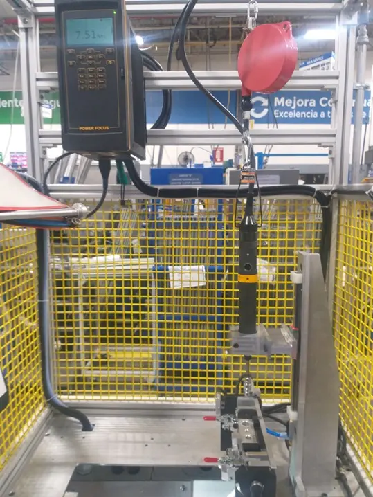

Máquinas de Ángulo
Control de apriete electrónico que mide la resistencia al giro y los grados de rotación exactos. Garantizan una tensión uniforme en el perno, eliminan variaciones por fricción y previenen fallas por fatiga en ensambles críticos.
